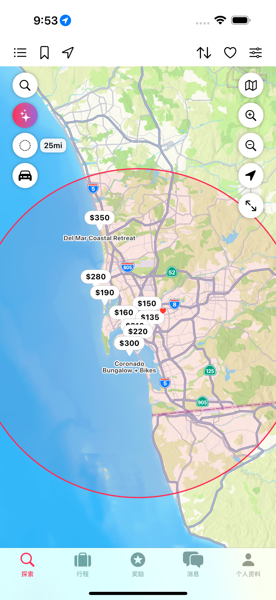
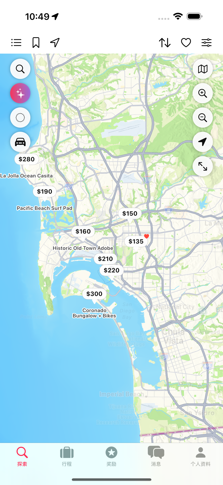
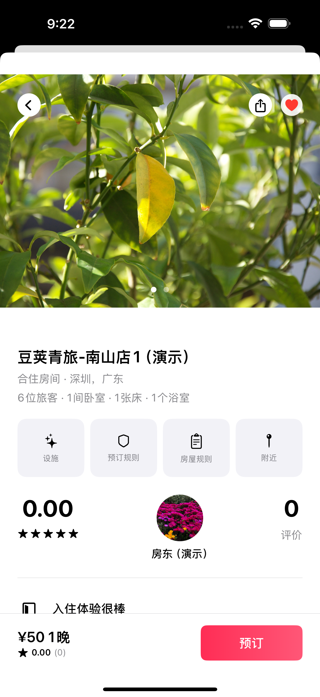
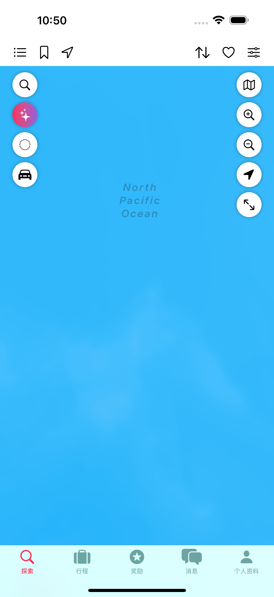
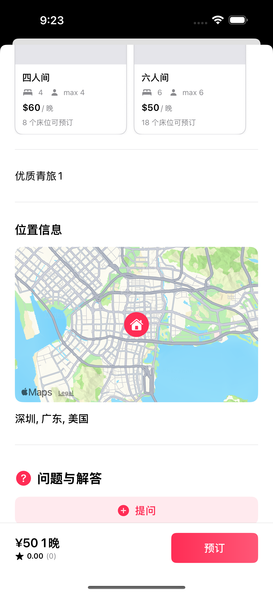
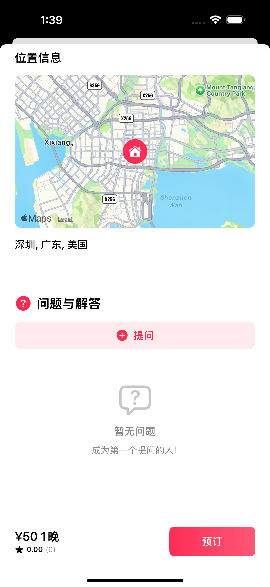
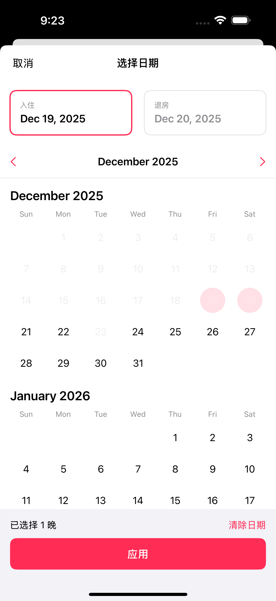
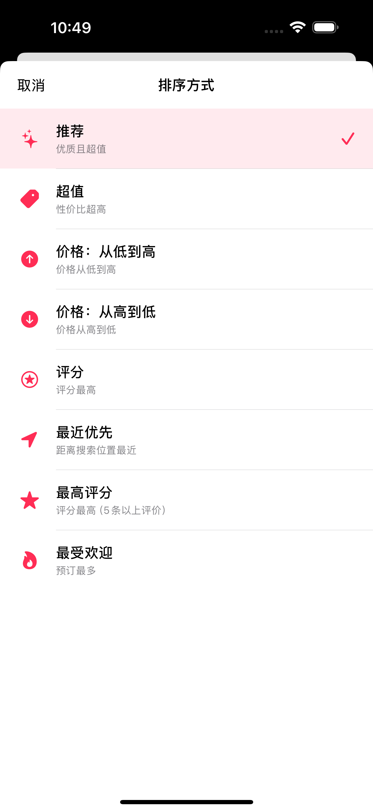
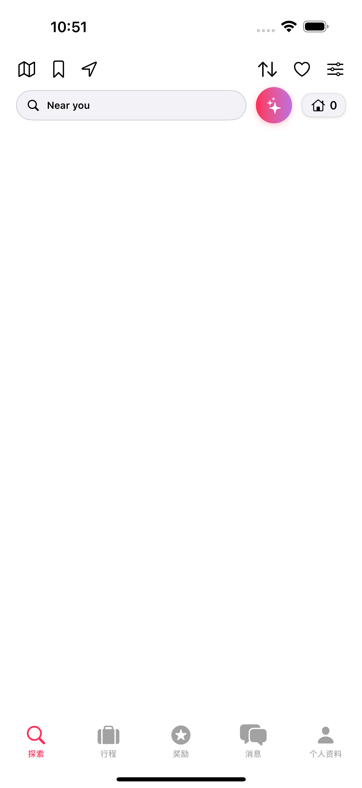
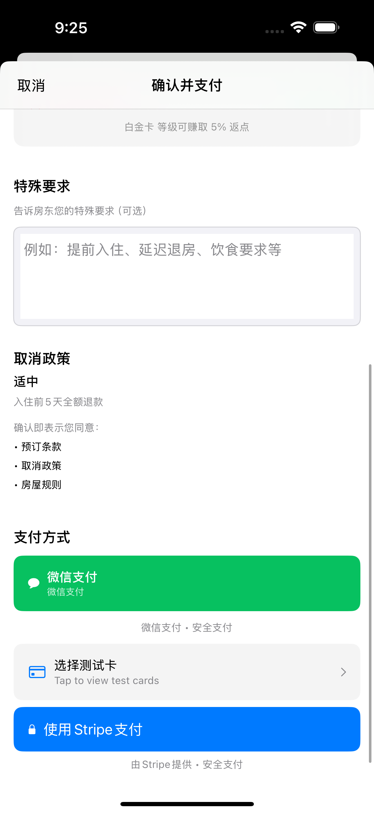

Peapod 用户手册 - 房客指南
版本： 0.18.8（Slice V - 多单元支持） 最后更新： 2025年11月30日 平台： iOS（iPhone、iPad）
← 返回目录
4. 房客指南
4.1 房客概览
语言设置: 首次在中国区使用时默认显示简体中文，用户可在登录页面右上角切换至 English 界面。
作为房客，您可以： - 🔍 搜索与浏览 - 按位置、日期、设施查找住宿 - 🧠 智能AI搜索 - 使用行程意图检测获取个性化结果 - 📅 预订住宿 - 安全支付预订房源 - 🎁 添加体验活动（未来功能 – 中国版1.0暂不可用）- 预订时可选的活动套餐 - 💬 与房东沟通 - 入住前/中提问 - ⭐ 发表评价 - 分享您的体验并附上照片 - 🎁 赚取奖励 - 预订获得积分 - 📱 管理行程 - 查看即将到来和过去的住宿 - 👥 推荐好友和房东 - 通过推荐赚取奖励 - ⚙️ 设置偏好 - 自定义您的体验
新功能： - 行程意图检测 - AI搜索理解行程类型（工作、家庭、浪漫）并自动应用相关筛选 - 体验套餐（未来功能 – 中国版1.0暂不可用）- 预订时可用的精选本地活动、导览和服务
4.2 浏览和搜索住宿
4.2.1 探索视图（主屏幕）
位置： 主标签 → “探索”（放大镜图标）
您将看到： - 智能搜索栏（2个按钮：搜索、AI搜索） - 地图/列表视图切换 - 精选房源网格/列表 - 附近搜索按钮 - 已保存搜索书签按钮 - 带活动数量徽章的筛选按钮 - 房源数量徽章 - 排序按钮（在房源数量徽章旁边） - 收藏心形图标 - 通知铃铛
顶部导航栏： - 地图切换（地图/列表图标）- 在列表和地图视图之间切换 - 已保存搜索（书签图标）- 访问您保存的搜索条件 - 附近搜索（位置图标）- 查找当前位置附近的房源 - 房源数量徽章（房屋图标+数字）- 查看可用房源总数 - 排序按钮（在房源数量旁边）- 选择结果排序方式 - 收藏筛选（心形图标）- 仅显示收藏的房源 - 筛选按钮（滑块图标）- 打开高级筛选 - 通知铃铛 - 查看通知
导航方式： - 垂直滚动 - 浏览房源 - 点击搜索栏 - 输入特定搜索 - 切换地图 - 在列表和地图视图之间切换 - 点击附近 - 查找您位置附近的房源 - 点击心形 - 切换仅显示收藏 - 点击筛选 - 打开筛选面板
4.2.2 地图视图
什么是地图视图？
用于可视化探索房源的交互式地图界面。适用于： - 了解房源在环境中的位置 - 查看特定社区的房源集群 - 评估与兴趣点的距离 - 可视化调整搜索半径 - 比较房源之间的距离

位置： 探索视图 → 切换”列表/地图”按钮（顶部导航）或通过附近搜索自动激活
主要功能： 1. 搜索圆圈可视化 - 粉色圆圈显示搜索区域，半径可调（5-50英里） 2. 内联半径控制 - 无需离开地图视图即可实时调整滑块 3. 搜索和AI搜索按钮 - 从地图直接访问搜索 4. 距离显示 - 查看到每个房源的精确距离 5. 地图样式切换 - 在标准/卫星/混合视图之间切换 6. 会话持久性 - 半径偏好在应用重启后保留

地图视图预订流程：
- 打开地图视图：点击地图切换按钮或使用附近搜索
- 查看搜索圆圈：粉色圆圈显示您的搜索区域（默认25英里）
- 调整半径：使用底部的内联滑块扩大/缩小搜索区域
- 浏览房源：点击地图上的标记查看房源卡片
- 更改地图样式：点击样式按钮选择标准/卫星/混合视图
- 搜索或筛选：使用顶部栏按钮精细化结果
- 查看详情：点击房源卡片查看完整房源详情
地图控制： - 搜索按钮 - 打开搜索面板输入新位置 - AI搜索按钮 - 自然语言搜索 - 排序按钮 - 重新排序房源（激活时变粉色） - 筛选按钮 - 应用详细筛选 - 半径滑块 - 调整搜索半径（5-50英里） - 样式按钮 - 切换标准/卫星/混合 - 放大 - 右侧加号（+）按钮放大 - 缩小 - 右侧减号（-）按钮缩小 - 平移/移动地图 - 拖动地图探索不同区域
地图交互 - 房源卡片弹出：
当您点击地图上的房源标记时，会弹出一个紧凑的房源卡片，显示： - 房源照片（如有多张可滑动） - 房源标题 - 每晚价格 - 距搜索中心的距离（如”0.8英里”、“3.2英里”） - 可住人数（如”4位房客”） - 星级评分和评价数（如有） - 主要设施快速预览
使用房源卡片： 1. 点击标记 - 房源卡片在屏幕底部弹出 2. 滑动照片 - 查看多张房源图片（如有） 3. 点击卡片 - 打开完整房源详情页（第1.6节） 4. 点击X或点击地图其他位置 - 关闭卡片 5. 点击另一个标记 - 卡片更新显示该房源
卡片优势： - ✅ 无需离开地图视图即可预览房源 - ✅ 快速比较附近房源 - ✅ 一目了然查看照片和价格 - ✅ 快速导航到完整详情

距离显示： 距离徽章显示在房源卡片上，显示与搜索位置的精确距离（如”0.8英里”、“3.2英里”）。在使用附近搜索或”距离最近”排序时，列表视图中也可见。
参见附录B了解PostGIS后端、搜索圆圈架构和性能优化的技术详情。
4.2.3 搜索房源
搜索方法： 1. 点击探索视图顶部的搜索栏 2. 输入目的地（如”圣地亚哥海洋世界”） 3. 选择日期（入住和退房） 4. 添加房客（成人和儿童） 5. 点击”搜索X个地点”查看即时结果
搜索结果： - 可用房源列表 - 显示每晚价格 - 显示主要设施 - 距搜索中心的距离 - 房客评分（如有评价） - 收藏心形图标（点击收藏）

4.2.4 查看房源详情
点击搜索结果中的任何房源卡片，打开包含所有房源信息的详细页面。

房源详情页部分：
A. 照片画廊 - 左右滑动浏览照片轮播 - 点击任何照片全屏查看 - 捏合缩放查看细节 - 点击X关闭全屏视图
B. 房源概览 - 房源标题和位置 - 房东姓名和头像 - 每晚价格 - 可住人数 - 卧室、浴室和床位数量
C. 设施 - 带图标的完整列表 - 按类别组织（必备、特色、安全） - 如有截断，点击”显示全部”查看完整列表

D. 预订和取消 - 取消政策信息 - 灵活、中等或严格政策详情 - 根据取消时间的退款时间表
E. 房屋规则 - 入住和退房时间 - 吸烟、宠物和活动政策 - 其他房源特定规则

F. 周边 - 附近的兴趣点 - 到景点和地标的距离 - 本地设施和便利设施

G. 睡眠区域 - 卧室配置和床型 - 睡眠安排的视觉呈现 - 总床位数和床型（双人床、大床、单人床等） - 显示每个卧室的配置

H. 关于此房源 - 房东撰写的详细房源描述 - 突出独特功能和设施
I. 位置 - 显示精确房源位置的交互式地图 - 到市中心的距离

J. 评价 - 总体评分（1-5星）和评价总数 - 评分分布明细 - 按星级筛选（全部、5星、4星等） - 单个房客评价包括： - 评价者姓名、头像和日期 - 星级评分和评价文字 - 照片画廊（如包含照片可水平滑动） - 长评价的”显示更多”按钮 - 房东回复（如有）
评价照片画廊： - 照片以水平可滚动行显示在评价文字下方 - 左右滑动浏览所有照片 - 点击照片查看全尺寸（未来功能）

K. 预订部分（底部固定） - 显示所有费用的价格明细 - 入住/退房日期选择器 - 房客数量选择器 - “立即预订”（即时预订）或”申请预订”按钮
预订方法： 1. 使用日历选择日期 2. 调整房客数量 3. 查看价格明细（每晚房价×晚数+费用） 4. 点击”立即预订”或”申请预订”

L. 问答部分 - 房客和房东之间的公开问答 - 预订前咨询的”提问”按钮 - 对于常见问题，比私信更快
提问方法： 1. 滚动到”问答”部分 2. 点击”提问” 3. 输入您的问题 4. 点击”提交” 5. 房东回答时收到通知

常见问题： - 入住程序 - 停车情况 - 宠物住宿 - 是否适合儿童/老人 - 附近设施 - WiFi速度 - 任何房源特定问题
4.2.5 筛选和排序结果
打开筛选面板：
从探索视图，点击筛选按钮（右上角）打开筛选面板。您将看到8个筛选部分的2x4网格。选择任何部分配置筛选，实时数量随更改更新。点击”显示X个结果”应用筛选并返回搜索结果。
筛选部分（共8个）：
1. 价格 - 使用范围滑块设置预算（$0 - $1000+） - 快速选择选项：低于$100、$100-$200、$200-$500、$500+ - 调整范围时实时更新结果数量

2. 房客评分 - 按最低评分筛选：任意、4.0+、4.5+、4.8+或满分5.0星 - 帮助您找到高评分房源 - 清除选择以移除筛选

3. 房源类型和布局 - 房源类型： 独栋房屋、公寓、客房、酒店、青旅、精品酒店、度假村（多选） - 单单元类型： 独栋房屋、公寓、客房 — 预订整个房源 - 多单元类型： 酒店、青旅、精品酒店、度假村 — 预订房源内的房型/床位 - 房间和床位： 设置卧室（1-10或”任意”）、浴室（1-10或”任意”）和床位（1-10或”任意”）的最低要求 - 使用+/-按钮调整最低值 - 酒店/青旅注意： 筛选在房型/床位级别应用（见下方搜索行为部分）

4. 照片和视频 - 按媒体可用性筛选房源 - 照片： 最少照片数量（如5+张、10+张） - 视频： 筛选有视频导览的房源 - 帮助找到有全面视觉内容的完善记录房源

5. 设施 - 按房源特性分类筛选： - 必备（WiFi、厨房、停车等） - 特色（泳池、热水浴缸、健身房等） - 安全（烟雾探测器、急救箱等） - 无障碍（轮椅无障碍、无台阶入口、无障碍停车、无障碍浴室、宽门、电梯、扶手、低床高度） - 娱乐 - 适合家庭 - 其他 - 选择多个设施以缩小搜索范围 - 无障碍设施在设施部分内分组，便于发现
酒店/青旅设施如何运作： - 共享设施： 全房源范围的功能（泳池、健身房、餐厅）对所有房客可用 - 房型设施： 特定房型专属（阳台、迷你吧、独立卫浴） - 组合设施： 搜索筛选匹配共享+房型设施包含所有您选择设施的房型 - 示例：如果筛选”WiFi + 阳台”，只有两者都有（无论是共享还是房型特定）的房型会匹配

6. 预订和取消 - 预订选项： 筛选即时预订、自助入住或超级房东房源 - 取消政策： 选择您的灵活度： - 灵活（入住前24小时+全额退款） - 中等（入住前5天+全额退款） - 严格（入住前7天+50%退款）

7. 房屋规则和房东语言 - 房屋规则 - 房源规则的三态筛选（是/否/任意）： - 允许宠物 - 允许吸烟 - 允许活动 - 安静时间 - 在是（必须有）、否（不允许）或任意（无偏好）之间切换 - 房东语言 - 按房东所说语言筛选： - 英语、西班牙语、法语、德语、意大利语、葡萄牙语 - 中文（普通话）、日语、韩语 - 阿拉伯语、俄语、荷兰语 - 多选以找到会说您偏好语言的房东

8. 通勤/距离
查找在您工作地点、学校或任何目的地特定通勤时间内的房源。适合商务旅客、学生、会议参会者或任何需要靠近特定位置的人。

使用方法： 1. 输入您的目的地（地址、地标或地点名称） 2. 点击”设置”验证位置（出现绿色勾号） 3. 选择交通方式：驾车、公交、骑行或步行 4. 设置最长通勤时间（5-120分钟） 5. 结果筛选为仅显示在您通勤时间内的房源
主要功能： - 带绿色勾号的位置验证 - 四种交通方式（驾车、公交、骑行、步行） - 按模式持久化（每种模式记住自己的时间设置） - 会话记忆（关闭应用时保存设置） - 地图集成（地图上的汽车图标快速访问）

专业提示： - 使用地标更容易输入（“Salesforce大楼”而非完整地址） - 比较驾车和公交模式（城市中公交往往更快） - 按模式设置合理时间（20分钟驾车≠20分钟步行！） - 结合价格筛选获得实惠又方便的选择 - 使用地图视图地理位置查看通勤筛选结果

参见附录A了解地理编码详情和技术信息。
筛选应用：
配置筛选后： - 部分标签上的红色徽章显示活动筛选 - 底部栏显示活动筛选总数 - 更改时实时更新结果数量 - 点击”显示X个结果”应用并返回搜索 - 或点击”应用”（右上角）保存 - 或点击”取消”放弃更改 - 探索视图立即更新为筛选结果 - 筛选按钮显示活动数量徽章
4.2.6 AI搜索房源
位置： 智能搜索栏 → AI搜索按钮（闪光图标）
AI搜索如何工作：
AI搜索允许您用自然语言描述理想住宿，而不是使用筛选。只需描述您要找的，AI会解释您的请求并应用适当的筛选。
AI搜索使用方法： 1. 点击探索视图顶部的搜索栏 2. 点击”AI搜索”按钮（闪光图标） 3. 用自然语言描述您的理想住宿 4. 点击”用AI搜索” 5. 查看”我们理解为：“摘要，显示解析的详情（位置、日期、房客、房源类型、设施、价格） 6. 点击”使用这些筛选搜索”查看结果，或”修改”调整


示例查询： - “夏威夷12月20-27日4人海滨带泳池别墅” - “中央公园附近200美元以下允许宠物的公寓下周末” - “1月15-30日有好WiFi适合远程工作的安静住所” - “洛杉矶迪士尼乐园附近9月20-25日3人安静公寓” - “下周Salesforce大楼30分钟车程内2人公寓”
AI能理解的内容： - 位置（城市、社区、地标） - 日期（灵活格式：“下周末”、“9月20-25日”、“从周一到周五”） - 房客数量（“4人”、“3位房客”、“5口之家”） - 房源类型（“别墅”、“公寓”、“公寓”、“房屋”） - 设施（“泳池”、“WiFi”、“允许宠物”、“停车”、“海滨”） - 价格（“200美元以下”、“便宜”、“豪华”、“经济实惠”） - 特殊需求（“安静”、“适合远程工作”、“适合家庭”） - 行程意图（工作、家庭、浪漫、经济、豪华、户外、允许宠物）
行程意图检测（新功能）：
AI搜索现在自动检测您的行程类型并应用意图特定筛选：
检测的行程类型： - 工作/商务旅行 → 强WiFi、专用工作区、安静、晚入住、靠近公交 - 家庭旅行 → 整套房源、2+卧室、婴儿床/高脚椅、洗衣机/烘干机、厨房、停车 - 浪漫/蜜月 → 独立入口、安静时间、延迟退房、热水浴缸/壁炉（如有） - 团体旅行 → 大容量、多床位、娱乐设施、宽敞客厅 - 经济 → 价格上限+“最佳性价比”排序，突出不可退款选项 - 豪华 → 高端设施、高档房源、礼宾服务 - 户外/自然 → 附近徒步、风景、户外空间 - 远程工作 → 快速WiFi（50+ Mbps）、书桌、人体工学椅、安静环境 - 允许宠物 → 允许宠物、附近公园、尽可能一楼
行程意图如何工作： 1. 输入带行程背景的搜索（如”市中心附近工作旅行”） 2. AI检测意图并显示标签徽章（如”工作”徽章） 3. 自动应用相关筛选 4. 点击意图标签移除或切换意图 5. 随时覆盖 - 保持完全控制
基于意图的示例查询： - “下个月海洋世界附近250美元/晚以下的家庭旅行，需要厨房+停车” - “本周末圣地亚哥2小时车程内有壁炉的浪漫小屋” - “3月3-13日有强WiFi和书桌的安静远程工作住所10天” - “加州大学圣地亚哥分校附近经济实惠的学生公寓，9月学期” - “豪华海滨别墅团体旅行，睡12人，泳池和海景”
优势： - ✅ 比手动筛选选择更快 - ✅ 更自然的搜索方式 - ✅ 意图感知结果匹配您的行程目的 - ✅ 发现您可能想不到的相关筛选 - ✅ 非常适合特定、复杂的需求 - ✅ 透明 - 查看检测到的意图
4.2.8 酒店和青旅的搜索行为（多单元房源）
新功能： 酒店、青旅、精品酒店和度假村现在支持多单元搜索，这意味着筛选在房型/床位级别评估。
多单元搜索如何工作：
当您搜索住宿时，系统对不同房源类型有不同处理：
| 房源类型 | 搜索行为 |
|---|---|
| 独栋房屋、公寓、客房 | 筛选应用于整个房源（单单元） |
| 酒店、青旅、精品酒店、度假村 | 筛选应用于单个房型/床位（多单元） |
对于酒店/青旅，搜索筛选这样工作：
- 房客数量筛选 - 匹配能容纳您人数的房型/床位
- 示例：2位房客 → 显示max_guests ≥ 2的房间
- 对于青旅：要预订的床位数（通常1床=1位房客）
- 价格筛选 - 匹配预算范围内的房型/床位
- 示例：$50-$150 → 仅显示该范围内的房型
- 搜索卡片显示最便宜匹配房型的价格
- 床位筛选 - 匹配有最少床位的房型/床位
- 示例：2+床位 → 显示有2张或更多床位的房间
- 设施筛选 - 匹配有组合设施的房型/床位
- 组合 = 共享房源设施 + 房型特定设施
- 示例：筛选”WiFi + 阳台”匹配两者都有的房间
- 可用性筛选 - 检查该类型是否至少有一个单元可用
- 即使存在10个房间，只有1+个在您的日期可用才显示
搜索结果显示：
对于酒店/青旅，每个房源卡片显示： - 房源名称和位置（与之前相同） - “从$X/房间"**或**"从$X/床位” - 最便宜匹配房型/床位价格 - 房型/床型名称 - 如”豪华大床房”或”6床混合宿舍” - 标准徽章 - 超级房东、即时预订、自助入住
示例搜索场景：
您搜索： - 位置：圣地亚哥 - 日期：12月20-22日 - 房客：2人 - 价格：$100-$200 - 设施：WiFi、泳池
海滩度假酒店有3种房型： 1. 标准房（$120/晚）- 2位房客，WiFi 2. 豪华套房（$180/晚）- 4位房客，WiFi，阳台 3. 行政套房（$350/晚）- 4位房客，WiFi，阳台，按摩浴缸
结果： 酒店显示”从$120/房间 — 标准房”因为： - 标准房匹配价格（$120在$100-$200内 ✅） - 标准房匹配房客（2 ✅） - 标准房有WiFi ✅且泳池是共享的 ✅ - 至少1间标准房在12月20-22日可用 ✅
行政套房不显示因为超过$200价格筛选。
搜索酒店/青旅提示：
- 🏨 酒店： 按”房间”搜索 - 每种房型有自己的价格和设施
- 🛏️ 青旅： 按”床位”搜索 - 您预订的是共享宿舍的一张床
- 💰 显示的价格是每房间/床位每晚 - 不是每人
- 📅 可用性按房型 - 一种类型可能满员而另一种有空位
- ✨ 设施很重要 - 某些设施是房型特定的（阳台、迷你吧）
排序选项：
可用排序模式（8种）：
- 推荐（默认）- “质量与价值兼顾”
- 平衡价格实惠性和质量评分
- 大多数旅客的最佳整体价值
- 最佳性价比 - “物超所值”
- 优化价格质量比
- 适合追求品质的经济型旅客
- 价格：从低到高 - “最低价优先”
- 最便宜的房源优先显示
- 适合预算旅客
- 价格：从高到低 - “最高价优先”
- 最贵的房源优先显示
- 适合追求豪华的旅客
- 评分 - “最高评分”
- 按平均评分排序
- 显示评分最高的房源
- 距离最近 - “最靠近搜索位置”
- 按与搜索位置的距离排序
- 需要基于位置的搜索
- 好评最多 - “最高评分（5+条评价）”
- 显示有良好记录的高评分房源
- 需要至少5条评价以确保可信度
- 最受欢迎 - “预订最多”
- 显示预订量最高的房源
- 适合寻找经过验证的热门住宿
排序方法： 1. 点击顶部导航中的”排序”按钮（在房源数量旁边） 2. 从列表中选择您想要的排序模式 3. 结果立即重新排序 4. 排序按钮变粉色表示活动的自定义排序

筛选书签：
什么是筛选书签？
筛选书签让您保存喜欢的筛选和排序设置组合以便快速重用。适合： - 有特定偏好的常旅客 - 经常搜索相同条件的用户 - 快速访问复杂筛选组合
位置： 筛选面板 → 书签标签（默认视图）

保存的内容： - ✅ 所有活动筛选（价格、房源类型、设施等） - ✅ 排序偏好（条件和顺序） - ❌ 位置（不保存 - 每次选择） - ❌ 日期（不保存 - 每次选择） - ❌ 房客数量（不保存 - 每次选择）
为什么不保存位置、日期和房客： 这些根据您的旅行计划经常变化。书签关注您的偏好（您喜欢什么样的房源），而不是您的行程（何时何地旅行）。
保存书签方法： 1. 配置您想要的筛选（如泳池+WiFi、$100-200、允许宠物） 2. 设置您偏好的排序顺序（如价格：从低到高） 3. 点击筛选面板底部的”书签”标签 4. 点击”保存当前筛选”按钮 5. 输入描述性名称（如”经济海滩住宿”、“适合工作的公寓”） 6. 点击”保存”
使用书签方法： 1. 点击顶部导航栏中的书签图标（或筛选按钮 → 书签标签） 2. 从列表中选择一个书签 3. 筛选和排序立即应用 4. 像往常一样添加位置/日期/房客 5. 点击”显示X个结果”
编辑书签方法： 1. 打开筛选面板 → 书签标签 2. 在任何书签上向左滑动 3. 点击”编辑”重命名或”删除”移除
优势： - ⚡ 复杂筛选设置节省30+秒 - 🎯 每次搜索条件一致 - 🔄 轻松切换不同搜索风格 - 💡 记住之前有效的筛选
书签示例： - “家庭海滩旅行” - 泳池、海滩、3+卧室、$200-400 - “商务旅行” - WiFi、工作区、安静、靠近市中心 - “经济周末” - 低于$100、即时预订、免费停车 - “允许宠物的小屋” - 允许宠物、山景、壁炉
4.2.7 附近搜索
什么是附近搜索？
一键查找当前GPS位置附近的住宿。适合： - 旅途中的临时预订 - 发现当前位置附近的住宿 - 紧急住宿需求 - 在陌生区域探索选项
位置： 探索视图 → 顶部导航栏 → 位置图标按钮

工作原理： 1. 应用请求您当前的GPS坐标 2. 在5英里半径内搜索 3. 自动切换到地图视图 4. 最近的房源优先显示 5. 排序默认为”距离：最近优先”
附近搜索使用方法：
首次使用： 1. 点击顶部导航栏中的位置图标 2. 出现提示时授予位置权限（“使用应用时允许”或”仅允许一次”） 3. 等待GPS坐标（2-10秒） 4. 地图视图自动打开，显示5英里内的房源 5. 结果按距离排序（最近优先）
后续使用： 1. 点击位置图标（顶部导航栏） 2. GPS位置快速获取（1-2秒） 3. 地图更新到您的当前位置 4. 附近房源加载并显示距离徽章
搜索半径： - 默认：5英里（8公里） - 可通过筛选调整（未来功能）
发生的事情： 1. ✅ 获取GPS位置 2. ✅ 激活地图视图 3. ✅ 搜索中心设为您的坐标 4. ✅ 结果筛选为5英里半径 5. ✅ 按距离排序 6. ❌ 您的筛选/书签仍然适用（如有活动的）
隐私： - 仅在您点击按钮时访问位置 - 不存储或追踪 - 在您预订前不与房东分享 - 您在iOS设置中控制权限
故障排除： - “位置服务已禁用”：在iOS设置 → 隐私 → 位置服务 → Peapod中启用 - “加载缓慢”：首次启动可能需要10秒获取GPS。后续使用更快。 - “无结果”：增加搜索半径或清除筛选 - “位置错误”：确保启用GPS（而非WiFi定位）
优势： - 🎯 即时本地住宿发现 - 📍 非常适合公路旅行和即兴旅行 - ⚡ 一键搜索（无需输入） - 🗺️ 基于地图的可视化浏览
4.3 预订住宿
4.3.1 标准预订流程
前提条件： - 已创建账户并登录 - 已添加支付方式（可在预订时添加） - 已选择日期 - 已确认房客数量
预订步骤：
步骤1：确认预订详情 - 确认入住和退房日期 - 确认房客数量（成人和儿童分开统计） - 查看总晚数 - 查看价格预览 - 点击”立即预订”（即时预订）或”申请预订”
房客数量详情： 成人和儿童分开统计，帮助房东准备适当的设施（婴儿床、高脚椅等）。房源容量限制适用于总房客数。
步骤2：价格明细 查看完整费用明细： - 基础价格（每晚房价×晚数） - 清洁费（如适用） - 服务费（12%平台费） - 税费（如适用） - 总价
点击”价格详情”展开查看每项明细费用。

步骤3：支付方式 - 如未保存支付方式则添加（Apple Pay或信用卡/借记卡） - 如有可用则使用已保存的支付方式 - 推荐Apple Pay以获得最快、最安全的结账体验
Apple Pay优势： - 一键支付，Face ID/Touch ID认证 - 最安全的支付方式 - 无需手动输入卡片信息 - 最快的结账体验


步骤4：确认预订 1. 最后一次查看所有详情 2. 阅读服务条款和取消政策 3. 点击”确认并支付” 4. 使用Face ID/Touch ID认证（Apple Pay）或完成卡片支付 5. 等待确认（2-5秒）
步骤5：预订已确认
您将收到： - 应用内”预订已确认”消息 - 预订参考编号 - 房东联系信息 - “查看预订”和”联系房东”按钮 - 包含预订详情的邮件确认
4.3.2 即时预订
什么是即时预订？
启用”即时预订”的房源可以立即预订，无需等待房东批准。支付即时授权，预订当场确认。
如何识别即时预订： - 在房源卡片上寻找”⚡ 即时预订”徽章 - 房源详情页显示”立即预订”按钮（而非”申请预订”） - 按照标准预订步骤（支付立即处理） - 预订即时确认（无需房东批准）
房客优势： - ✅ 即时确认 - ✅ 无需等待房东回复 - ✅ 立即锁定您的日期 - ✅ 更适合临时预订
4.3.3 申请预订（非即时预订）
工作原理： 1. 识别没有即时预订徽章的房源 2. 房源详情页显示”申请预订”按钮 3. 按照标准预订步骤 4. 给房东写留言（可选但推荐） 5. 点击”发送请求” 6. 等待房东批准（最多24小时）
给房东留言提示： - 自我介绍 - 解释入住目的 - 提及任何特殊请求 - 礼貌清晰
接下来发生什么： - 房东有24小时回复 - 房东回复时您会收到通知 - 如果批准： - 支付自动处理 - 预订已确认 - 如果拒绝： - 不会扣款 - 房东可能提供原因 - 您可以搜索其他房源
4.3.4 支付冻结与扣款
支付如何运作： 1. 授权冻结 - 预订确认时在您的卡上冻结全额 2. 正式扣款 - 入住前24小时完成扣款 3. 房东收款 - 房东在入住后24小时收到款项
押金： - 部分房源需要押金 - 在您的卡上单独冻结 - 退房后3-5天退还（如无损坏）
4.3.5 预订确认
成功预订后：
您将收到： - 📧 邮件确认 - 预订详情、参考编号（可在偏好设置页配置） - 📱 应用内通知 - 预订已确认 - 💬 自动消息线程 - 与房东的对话已创建
预订详情包括： - 房源名称和地址 - 入住/退房日期和时间 - 已支付总价 - 房客数量 - 房东联系信息 - 预订参考编号 - 房源路线 - WiFi密码（如提供） - 入门说明
4.3.6 预订酒店和青旅（房型/床位选择）
新功能（Slice V）： 酒店、青旅、精品酒店和度假村现在支持多单元预订，允许您选择特定房型或床位类型，并在单次预订中预订多个单元。
多单元房源有何不同：
| 房源类型 | 选择单位 | 示例 | 库存 |
|---|---|---|---|
| 酒店/精品酒店 | 房型 | “豪华大床房”、“标准双床房” | 预订1+间房 |
| 青旅 | 床型 | “6人宿舍上铺”、“女生宿舍床位” | 预订1+张床 |
| 度假村 | 房型/套房 | “海景套房”、“花园别墅” | 预订1+个单元 |
| 独栋房屋/公寓 | 整套房源 | 预订整个地方 | 仅1个单元 |
酒店/青旅预订流程：
步骤1：查看房源详情
查看酒店或青旅房源时，您会看到新的部分：
A. 房源概览（与之前相同） - 照片、位置、房东信息、共享设施
B. 房型/床型部分（新） - 可滚动卡片显示每种可用房型/床型 - 每张卡片显示： - 类型名称（如”豪华套房”、“4床混合宿舍”） - 每晚价格每房间/床位 - 床位和床型（如”1张大床”或”1张上下铺”） - 每单元最多房客 - 房型特定设施（阳台、迷你吧、独立卫浴等） - 您日期的可用性指示器

步骤2：选择房型/床型
- 点击房型/床型卡片查看完整详情
- 查看详细描述、所有设施和照片
- 查看房型特定房屋规则（如有）
- 点击”选择此房间”或”选择此床位”
步骤3：选择数量
团体/家庭： - 使用数量选择器预订多个房间/床位 - 示例：为家庭聚会预订2间豪华房 - 示例：为团体旅行预订宿舍4张床位
数量选择器显示： - 您日期的可用单元（如”10间房中5间可用”） - 更改数量时总价更新 - 最大房客 = 预订单元数 × 每单元最大房客
步骤4：查看并预订
预订摘要显示： - 房型/床型： “豪华大床房” - 数量： “2间房” - 日期： 12月20-23日（3晚） - 价格计算： 房间费率： $150/晚 × 3晚 × 2间房 = $900 清洁费： $30 × 2间房 = $60 服务费： 12% = $115.20 ───────────────────────────────────────────────── 总计： $1,075.20 - 最大房客： 4人（每间2人 × 2间房）
步骤5：支付与确认
继续标准支付流程（第4.3.1节）。预订后： - 确认显示： 房型名称 + 预订数量 - 房间分配： 具体房间（如”501房”）可能由房东分配 - 入住说明： 与其他预订相同
可用性指示器：
| 指示器 | 含义 |
|---|---|
| ✅ “5间可用” | 该类型5个单元在您的日期可用 |
| ⚠️ “仅剩2间” | 有限可用性 - 尽快预订 |
| ❌ “已满” | 所选日期无可用单元 |
| 🔄 “检查中…” | 正在加载可用性（更改日期刷新） |
查看您的酒店/青旅预订：
在行程 → 即将到来中，您的预订卡片显示： - 房源名称和缩略图 - 房型/床型名称（如”豪华大床房”） - 预订单元数（如”2间房”或”3张床”） - 入住/退房日期 - 已支付总价
预订详情页显示： - 完整房型描述 - 房型特定设施 - 分配的房间号（如房东提供） - 标准预订操作（联系房东、取消、获取路线）
重要说明：
- 🏨 酒店/精品酒店： 带独立卫浴的私人房间
- 🛏️ 青旅： 经济价格的共享宿舍；按床位预订
- 🏝️ 度假村： 带度假设施的高端住宿
- 📅 实时可用性： 随着他人预订而更新
- 👥 房客限制：
预订单元数 × 每单元最大房客 - 🔢 房间分配： 具体房间由房东分配（自动或手动）
- 💰 价格： 每房间/床位每晚（不是每人）
为什么在Peapod选择酒店/青旅？
- 更优惠价格 - 直接预订通常比OTA便宜
- 积分奖励 - 每次入住都赚取奖励（与度假租赁相同）
- 房东沟通 - 与房源工作人员直接通讯
- 透明定价 - 无隐藏费用，相同结账流程
- 房型级设施 - 准确了解每种房型提供什么
- 灵活预订 - 一次交易预订多个房间/床位
4.4 管理您的预订
4.4.1 查看所有预订
位置： 主标签 → “行程”（行李箱图标）

查看预订方法： 1. 点击底部导航中的”行程”标签 2. 选择类别：即将到来、过去或已取消 3. 滚动浏览该类别的所有预订
预订类别： - 即将到来 - 未来预订 - 过去 - 已完成住宿 - 已取消 - 已取消预订
每个预订卡片显示： - 房源照片 - 房源名称 - 日期 - 位置 - 预订状态 - 快速操作（联系房东、查看详情、取消）
4.4.2 查看预订详情
点击行程中的任何预订卡片打开详细预订页面。

预订详情页： - 房源信息 - 照片、名称、地址 - 日期 - 入住和退房及时间 - 房客 - 房客数量 - 状态 - 已确认、待处理、已入住、已完成、已取消 - 支付状态 - 已支付、待支付、已退款 - 价格明细 - 所有费用明细 - 房东联系 - 姓名、头像、“联系房东”按钮
可用操作： - 获取路线（打开地图应用） - 联系房东 - 取消预订（如符合条件） - 报告问题 - 发表评价（入住后）

4.4.3 取消预订
资格： - 只有即将到来的预订可以取消 - 退款取决于取消政策和距入住的时间 - 确认前实时退款预览
取消政策： 1. 灵活 - 入住前24小时+取消全额退款 - 基础价格：100%退款（>24小时）、50%退款（<24小时） - 服务费：可退
- 中等 - 入住前5天+取消全额退款
- 基础价格：100%退款（>5天）、50%退款（2-5天）、0%（<2天）
- 服务费：可退
- 严格 - 入住前14天+取消全额退款
- 基础价格：100%退款（>14天）、50%退款（7-14天）、0%（<7天）
- 服务费：不可退
- 不可退款 - 无退款（10%折扣）
- 基础价格：任何时候0%退款
- 最低价格选项，无灵活性
重要：始终退款的项目 - ✅ 清洁费： 100%退款（如不入住则无需清洁） - ✅ 税费： 100%退款（如不入住则不适用税费） - 取消政策百分比仅适用于基础价格（住宿费）
自动退款计算： - 确认前显示精确退款金额的实时预览 - 基础价格、清洁费、服务费和税费退款的详细明细 - 基于政策的计算自动应用正确规则 - 时间感知计算考虑距入住的小时/天数
取消方法： 1. 前往行程 → 选择即将到来的预订 2. 滚动到底部点击”取消预订”按钮（红色） 3. 查看退款预览提示，显示： - 当前取消政策 - 距入住剩余时间 - 计算的退款金额 - 详细明细（基础价格+费用+税费） 4. 点击”确认取消”继续或”返回”取消 5. 等待处理（2-3秒） 6. 查看带退款摘要的取消确认
取消后： - 预订状态变为”已取消” - 退款自动处理到原支付方式（3-5个工作日） - 退款金额与预览一致（无意外） - 房东自动收到通知 - 取消邮件发送给房客和房东 - 预订移至”已取消”标签
退款示例：
示例1：灵活政策（入住前48小时取消） - 预订：$500基础价格 + $50清洁费 + $60服务费 + $40税费 = $650总计 - 基础价格退款：100% = $500 ✅ - 清洁费退款：100% = $50 ✅（始终退款） - 税费退款：100% = $40 ✅（始终退款） - 服务费退款：100% = $60 ✅（灵活政策允许） - 总退款：$650（全额退款）
示例2：中等政策（入住前3天取消） - 预订：$500基础价格 + $50清洁费 + $60服务费 + $40税费 = $650总计 - 基础价格退款：50% = $250（按政策部分退款） - 清洁费退款：100% = $50 ✅（始终退款） - 税费退款：100% = $40 ✅（始终退款） - 服务费退款：100% = $60 ✅（中等政策允许） - 总退款：$400（不是$325 - 清洁费和税费始终退款！）
示例3：严格政策（入住前5天取消 = 无基础价格退款） - 预订：$500基础价格 + $50清洁费 + $60服务费 + $40税费 = $650总计 - 基础价格退款：0% = $0（在7天窗口内） - 清洁费退款：100% = $50 ✅（始终退款） - 税费退款：100% = $40 ✅（始终退款） - 服务费退款：0% = $0（严格 = 不可退） - 总退款：$90（仅清洁费+税费）
示例4：不可退款 - 预订：$450基础价格（10%折扣）+ $50清洁费 + $54服务费 + $36税费 = $590总计 - 取消：任何时候 - 总退款：$86（仅清洁费$50 + 税费$36）
4.4.4 修改预订日期
✅ 可用： 全自动日期修改，自动批准、支付处理和即时确认。

工作原理：
Peapod的智能修改系统根据您预订的取消政策自动批准或需要房东批准：
自动批准（无需房东批准）： - 灵活政策： 入住前≥24小时的修改自动批准 - 中等政策： 入住前≥5天的修改自动批准 - 严格政策： 入住前≥7天的修改自动批准
需要房东批准： - 超出上述政策期限的修改必须由房东批准
修改预订方法：
- 打开您的预订
- 前往行程 → 即将到来 → 选择预订
- 点击”修改日期”按钮
- 选择新日期
- 选择新的入住和退房日期
- 系统自动计算价格差异
- 查看预览：退款金额或额外费用
- 查看价格变化
- 缩短住宿 → 部分退款到您的支付方式
- 延长住宿 → 从您保存的卡扣取额外费用
- 相同价格 → 无需支付调整
- 确认修改
- 点击”确认更改”
- 支付自动处理（如需要）
- 成功： 预订立即更新 + 发送确认通知
- 支付失败： 修改被阻止，原预订不变
接下来发生什么：
如果自动批准： - ✅ 预订立即更新为新日期 - ✅ 通过Stripe自动处理支付/退款 - ✅ 您收到带更新行程的确认通知 - ✅ 房东收到关于更改的通知 - ✅ 邮件确认发送给双方
如果需要房东批准： - ⏳ 请求发送给房东 - ⏳ 房东有24小时批准/拒绝 - ⏳ 房东回复时您收到通知 - ✅ 如果批准：支付处理并更新预订 - ❌ 如果拒绝：不扣款，原日期保持
支付处理：
- 退款（缩短住宿）3-5个工作日内处理
- 额外费用（延长住宿）使用您保存的支付方式
- 支付失败阻止修改 - 您的原预订保持不变
- 确认前显示所有支付详情
重要说明：
- ⚠️ 修改必须在入住前进行
- ⚠️ 延长住宿时支付方式必须有效
- ⚠️ 成功/失败时您和房东都收到通知
- ⚠️ 如果支付失败，修改被阻止，原预订保留
- ✅ 无隐藏费用 - 价格差异预先显示
- ✅ 取消政策规则适用（与取消退款相同）
示例场景：
示例1：缩短住宿（退款） - 原始：12月10-15日（5晚 × $100 = $500） - 新：12月10-13日（3晚 × $100 = $300） - 结果：$200退款到您的支付方式（3-5个工作日）
示例2：延长住宿（额外费用） - 原始：12月10-13日（3晚 × $100 = $300） - 新：12月10-17日（7晚 × $100 = $700） - 结果：从您保存的卡扣取$400额外费用（即时）
示例3：日期移动（相同价格） - 原始：12月10-15日（5晚 × $100 = $500） - 新：12月12-17日（5晚 × $100 = $500） - 结果：无需支付，日期立即更新
故障排除：
- “需要支付方式” - 在账户设置中添加/更新支付方式
- “卡被拒绝” - 更新支付方式后重试
- “修改被阻止” - 支付失败，原预订不变
- “等待房东批准” - 超出政策期限，等待房东回复
4.5 与房东沟通
4.5.1 访问消息
位置： 主标签 → “收件箱”（聊天气泡图标）
访问方法： 1. 点击底部导航中的”收件箱”标签 2. 查看所有对话列表（最近优先） 3. 如有新消息，标签上显示红色未读徽章 4. 点击任何对话打开
收件箱视图显示： - 房东头像 - 房源名称 - 最后消息预览 - 时间戳（如”2小时前”） - 未读数量（红色徽章）
4.5.2 开始对话
预订前： 1. 从房源详情页，滚动到房东部分或点击房东头像 2. 点击”联系房东”按钮 3. 输入您的消息 4. 点击”发送”（纸飞机图标）
预订后： - 预订时自动创建对话 - 从收件箱或预订详情访问 - 点击”联系房东”按钮
4.5.3 发送消息
发送方法： 1. 点击底部的消息输入框 2. 输入您的消息 3. 点击发送按钮（纸飞机图标） 4. 消息出现在线程中，显示”已发送”状态 5. 房东阅读后状态更新为”已读”
消息功能： - 实时发送 - 已读回执 - 输入指示器（“房东正在输入…”） - 时间戳 - 消息线程
消息礼仪： - 礼貌专业 - 提出清晰具体的问题 - 提供关于您住宿的相关细节 - 及时回复房东询问
4.5.4 常见问题
预订前： - 是否可以提前入住或延迟退房？ - 停车说明？ - 公共交通通达性？ - 安静时间或社区规定？ - 宠物政策细节？ - 是否适合儿童/老人？
入住前： - 具体入门说明？ - WiFi密码？ - 恒温器使用？ - 垃圾/回收程序？ - 在哪里停车？
入住期间： - 立即报告任何问题 - 询问电器使用问题 - 请求本地推荐 - 通知任何损坏
4.6 入住期间
4.6.1 入住
到达前： 1. 前往行程 → 即将到来的预订 2. 点击预订查看详情 3. 仔细阅读”入住说明”部分 4. 记下房源地址和房东联系信息 5. 点击”获取路线”使用地图导航
入住流程： - 标准入住时间： 下午3:00（因房源而异） - 按照房东的具体说明： - 密码锁代码 - 钥匙取放位置 - 亲自与房东会面 - 密码箱代码 - 智能锁应用
如果无法进入房源： 1. 立即通过收件箱联系房东 2. 如果15分钟内无回复，致电房东（预订详情中的电话号码） 3. 如果仍无法进入，在预订中点击”报告问题”或联系Peapod客服
4.6.2 入住期间
房屋规则提醒： - 遵守所有发布的房屋规则 - 尊重退房时间 - 保持清洁 - 立即报告任何损坏 - 不允许未经授权的访客 - 尊重邻居 - 不吸烟（除非允许） - 不举办派对（除非允许）
需要帮助？ - 首先： 联系您的房东 - 如果房东不可用： 联系Peapod客服 - 紧急情况： 联系当地紧急服务（911）
维护问题： 1. 注意到问题（如WiFi故障、空调损坏） 2. 立即通过收件箱联系房东 3. 用照片记录问题（点击消息中的相机图标） 4. 房东应在2小时内回复 5. 如果未解决，在预订中点击”报告问题” 6. 如果问题仍未解决，您可能有资格获得部分退款
4.6.3 退房
标准退房时间： 上午11:00（因房源而异）
退房清单：
退房当天早上： - ✅ 收集所有物品（检查衣柜、抽屉、浴室） - ✅ 处理垃圾（按房东说明） - ✅ 清洗餐具或装入洗碗机 - ✅ 整理床铺（如房东要求） - ✅ 关闭灯、恒温器、电器 - ✅ 锁好所有门窗 - ✅ 归还钥匙（如适用） - ✅ 在退房时间前离开
延迟退房： - 必须提前与房东安排 - 联系房东请求 - 可能产生额外费用 - 不保证同意
4.7 评价与评分
4.7.1 为什么评价很重要
- 帮助未来房客做出明智决定
- 为房东提供反馈
- 在Peapod社区建立信任
- 提升平台质量
- 影响搜索排名
4.7.2 何时发表评价
评价窗口： - 退房后立即开放 - 退房后14天关闭 - 评价在房客和房东都提交后（或14天后）发布
评价提示：
退房后，您将收到： - 应用内通知：“您的入住体验如何？” - 邮件提醒（如3天后未完成）
访问评价方法： - 点击通知直接进入评价页面 - 或前往行程 → 过去 → 选择预订 → “发表评价”
4.7.3 如何写评价
步骤1：访问评价页面 - 前往行程 → 过去预订 → 选择已完成预订 - 点击”发表评价”按钮
步骤2：评价房源（1-5星） 点击星星评价每个类别： - 总体评分 - 清洁度 - 准确性（与房源描述是否相符） - 沟通（房东响应速度） - 位置 - 性价比

步骤3：撰写评价文字（可选但鼓励） - 输入您的体验（最多500字符） - 分享亮点并提及任何问题 - 输入时显示字符计数
步骤4：添加照片（可选，最多5张） 1. 点击”添加照片”按钮 2. 从照片库选择 3. 照片显示为缩略图 4. 点击X移除不想要的照片 5. 提交评价时照片上传
照片指南： - ✅ 准确展示房源（房间、设施、景观） - ✅ 突出正面或负面方面 - ✅ 良好的光线和清晰度 - ✅ 尊重房东隐私 - ❌ 不要包含未经许可的人物 - ❌ 不要包含个人信息 - ❌ 每条评价最多5张照片 - ❌ 文件大小自动压缩（每张最大5MB）
照片上传行为： - 上传前照片自动压缩 - 提交评价时上传 - 如果照片上传失败，您会看到警告但评价文字仍会保存 - 如果上传失败，可以稍后添加照片
步骤5：提交 1. 检查您的评分和文字 2. 点击”提交评价”按钮 3. 出现确认 4. 评价是私密的，直到房客和房东都提交（或14天过后）
评价指南： - ✅ 诚实和建设性 - ✅ 专注于您的体验 - ✅ 提及具体细节（清洁度、准确性、位置） - ✅ 帮助未来房客决定 - ❌ 不要进行人身攻击 - ❌ 不要分享个人联系信息 - ❌ 不要提及价格（价格会随时间变化） - ❌ 不要以差评威胁房东
提交后： - 评价是私密的，直到双方都评价（或14天过后） - 发布后无法编辑 - 房东可以公开回复您的评价 - 评价出现在房源页面 - 贡献到房源总体评分
4.8 忠诚度计划（奖励）
4.8.1 Peapod奖励如何运作
赚取积分： - 完成预订 - 基于预订价值的积分（总额的1%） - 发表评价 - 50奖励积分 - 推荐 - 好友预订时获得积分（即将推出） - 特别促销 - 限时奖励积分
积分价值： - 1积分 = $0.01美元（或等值人民币） - 积分永不过期 - 可与其他折扣组合
赚取公式： - 基础积分 = 预订总额的1% - 示例：$500预订 = 500积分（$5价值） - 评价奖励 = +50积分 - 总计 = 550积分（$5.50价值）
4.8.2 查看您的奖励
位置： 主标签 → “奖励”（星形图标）

查看方法： 1. 点击底部导航中的”奖励”标签 2. 查看奖励仪表板显示： - 当前积分余额 - 当前等级（银牌、金牌、铂金、钻石） - 下一等级进度 - 赚取历史 - 兑换历史 3. 点击”兑换积分”使用您的积分
4.8.3 房客忠诚度等级
等级级别（仅基于年度消费）：
银牌（$0+）： - 所有新房客从这里开始 - 预订赚取2%积分 - 标准客服支持
金牌（$2,500+/年）： - 预订赚取3%积分 - 优先客服支持 - 提前获得促销活动
铂金（$5,000+/年）： - 预订赚取4%积分 - 高级客服支持 - 独家优惠 - 延迟退房（如可用）
钻石（$10,000+/年）： - 预订赚取5%积分 - 24/7 VIP客服支持 - 保证提前获得新功能 - 免费升级（如可用） - 私人礼宾
注意： 等级仅基于年度消费，不是预订次数。您的消费每年重置。
等级进度：
查看您的等级进度： - 仪表板上显示当前等级徽章 - 进度条显示向下一等级的消费 - 点击”查看要求”查看详细等级福利和消费门槛 - 年度消费总额自动追踪
4.8.4 兑换积分
兑换选项： - 预订折扣 - 将积分应用于任何预订（最少100积分）
兑换方法： 1. 结账时或从奖励标签，点击”使用积分” 2. 输入要兑换的金额（最少100积分） 3. 折扣立即应用 4. 从您的余额扣除积分 5. 折扣出现在价格明细中
兑换规则： - 最低兑换：100积分（$1） - 最多可兑换预订费用的20% - 预订时立即扣除积分 - 如取消预订，积分退还 - 积分永不过期 - 不能提现（仅用于预订折扣）
4.9 推荐系统
位置： 奖励标签 → 推荐（仅房客用户）
4.9.1 房客推荐如何运作
简单直接： 邀请好友加入Peapod。在他们预订的12个月内赚取2%佣金。无注册奖励，无持有期 - 只有清晰、即时的收益！
开始使用： 1. 前往奖励标签 → 推荐子标签 2. 显示您的唯一推荐码（如”JOHN1234”） 3. 点击“复制”复制代码或“分享”分享邀请链接 4. 通过iMessage、微信、邮件或任何应用分享

如何赚取： 1. 好友使用您的推荐码注册 2. 好友预订住宿 3. 您立即赚取预订金额的2%（作为积分） 4. 佣金持续从注册日起12个月 5. 无持有期 - 积分立即可用！
收益示例： - 好友预订$100住宿 → 您赚取200积分（$2.00） - 好友预订$500住宿 → 您赚取1,000积分（$10.00） - 好友预订$1,000住宿 → 您赚取2,000积分（$20.00） - 3次预订后总计：3,200积分（$32.00）
积分兑换： - 100积分 = $1.00美元 - 使用积分兑换未来预订
UI元素（推荐标签）： - 您的推荐码 - 大字、等宽字体显示 - 复制按钮 - 一键复制到剪贴板 - 分享按钮 - 打开iOS分享面板 - 总推荐收益 - 赚取的总积分 - 统计卡片： - 总推荐（注册的好友） - 活跃推荐（仍在12个月内） - 总预订（来自推荐的所有预订） - 近12个月（最近收益） - 推荐历史 - 交易列表包括： - 被推荐人姓名 - 预订金额 - 赚取的积分 - 日期 - 佣金百分比
4.9.2 分享您的推荐码
方法1：复制粘贴 1. 点击”复制”按钮 2. 将代码粘贴到任何地方（短信、邮件等） 3. 好友在注册时输入代码
方法2：分享链接（推荐） 1. 点击”分享”按钮 2. 出现iOS分享面板 3. 选择应用（iMessage、微信、邮件等） 4. 消息自动填充： ``` 嗨！我正在使用Peapod寻找超棒的住宿。 使用我的推荐码JOHN1234加入我，开始探索吧！
https://peapod.com/join?ref=JOHN1234 ``` 5. 发送给好友！
管理员可自定义分享消息： - 管理员可以编辑分享消息模板 - 在管理员 → 配置 → 推荐 → 分享消息中可用 - 使用占位符：{CODE}、{NAME}、{LINK}
4.9.3 追踪您的推荐收益
推荐仪表板（奖励 → 推荐）：
顶部部分 - 摘要： - 总推荐收益：0积分 - 美元近似值
推荐码卡片： - 您的代码（JOHN1234） - 复制和分享按钮
统计网格（4张卡片）： 1. 总推荐 - 注册的好友数量 2. 活跃推荐 - 仍在12个月窗口内 3. 总预订 - 来自推荐的所有预订 4. 近12个月 - 最近收益（积分）
推荐历史： - 所有佣金交易列表 - 显示：好友姓名、预订金额、赚取积分、日期 - 下拉刷新获取最新数据
空状态： - “还没有推荐” - “分享您的推荐码赚取奖励！”
4.9.4 推荐规则与限制
资格： - ✅ 仅房客用户（旅客） - ❌ 房东、管理员、审核员不能推荐
持续时间： - 从好友注册日起12个月 - 管理员可配置（默认：12个月）
佣金率： - 被推荐人预订金额的2% - 管理员可配置（默认：2%）
注册流程： - 房客注册时可选的推荐码字段 - 仅在选择”房客”账户类型时显示 - 使用分享链接时代码自动应用
重要说明： - 不允许自我推荐 - 代码必须在注册时输入（之后不能添加） - 预订状态为”已完成”时发放佣金 - 无持有期 - 立即可用 - 必须等待赚取后90天（防欺诈） - 通过Stripe提现（银行转账或借记卡） - 积分永不过期
如何提现： 1. 前往奖励 → “推荐” 2. 检查”可提现”余额 3. 点击”提现” 4. 输入金额（最少2,500积分） 5. 选择提现方式（银行账户或借记卡） 6. 确认详情并点击”请求提现” 7. 资金在3-5个工作日内转账
提现重要说明： - 从推荐赚取的积分仅能用于预订折扣 - 中国版1.0不支持提现 - 所有忠诚度和推荐积分只能兑换为预订折扣 - 90天持有期防止欺诈和退款 - 积分永不过期，即使被锁定
4.10 个人资料与设置
通用个人资料和账户功能，请参阅主手册的通用功能部分：
- 个人资料管理 - 查看和编辑您的个人资料，个人资料标签
- 消息系统 - 如何发送和接收消息
- 通知设置 - 配置提醒和通知
- 账户设置 - 邮箱、密码、2FA、安全
- 地区与语言 - 语言、货币、时区
- 隐私设置 - 可见性、数据下载、账户删除
- 帮助与支持 - 获取帮助、联系客服、报告问题
- 退出登录 - 如何退出登录
房客特定个人资料功能：
个人资料统计： - 行程数（已完成预订） - 收到的评价数 - 会员年数
统计显示在您姓名下方并实时更新。
身份验证：
房客可以验证身份以与房东建立信任：
- 从您的个人资料，点击”验证”按钮（盾牌图标）
- 选择验证类型：
- 邮箱（通过链接验证）
- 手机（短信验证码）- 中国版1.0主要验证方式
- 政府证件（未来功能 – 1.0版本暂不可用）
- 学生身份（获得折扣）
- 按照验证步骤操作
- 收到确认
- “手机已验证”徽章出现在您的个人资料上
中国版1.0身份验证：
中国版1.0使用仅手机/短信验证进行身份验证： - 美国用户： 通过Twilio向美国手机号发送短信验证 - 中国用户： 通过Twilio向中国手机号（+86）发送短信验证 - 验证后：“手机已验证”徽章显示在您的个人资料上
注意： 完整文件身份验证（微信身份、政府证件上传）计划在未来版本推出，中国版1.0暂不可用。
验证优势： - 与房东建立信任 - 手机已验证徽章提高预订批准率 - 学生验证解锁折扣 - 房东更喜欢已验证用户
查看其他用户资料：
您可以查看房东、评价者和其他用户的公开资料：
访问方式： - 点击房源上的房东姓名 - 点击消息中的用户头像 - 点击评价中的评价者姓名
您能看到的（公开视图）： - 头像和姓名 - 用户类型 - 加入时间 - 收到的评价 - 关于部分（简介、语言） - 房源（如果是房东）
您不能看到的： - 邮箱地址 - 电话号码 - 支付方式 - 私人设置
附录
详细参考资料，请参阅单独的附录文档：
→ 房客手册附录
包含： - 附录A： 通勤筛选技术详情 - 附录B： 预订修改参考 - 附录C： AI驱动功能 - 附录D： 积分与奖励详情